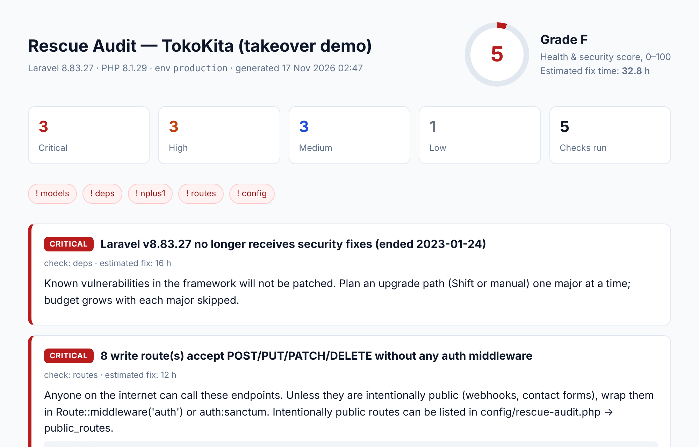

Inherited a half-finished app? Developer disappeared? Something broke after an update? In 24 hours you get a written report of what's actually there — and what it will cost to fix.
Order an audit See a sample reportWrite endpoints without authentication, token-only links, missing rate limiting on login and OTP routes.
Mass-assignment holes ($guarded = [], create($request->all())), debug mode and insecure cookie settings in production.
Packages with published CVEs, end-of-life Laravel and PHP versions, debugging tools shipped to production.
N+1 queries in Blade and Livewire views, the usual reason a page that was fine with 10 records dies at 1,000.
The scanner finds the obvious. I then read auth, payments and the API by hand — the places where the expensive bugs live.
A 0–100 health score, each finding with severity and estimated fix hours, so you can decide: fix, rewrite, or walk away.

Need the fixes done too? After the audit we continue at an hourly rate with the report as the task list — no guessing, no open-ended "let me look at it".
Read-only GitHub/GitLab/Bitbucket invite, or a zip. Nothing is deployed, nothing leaves my machine.
Automated scan plus a manual read of the critical paths. Usually same day.
HTML + a short written summary. Ask anything about it for the next 7 days.
No. The code and the .env.example are enough. If you also share the production .env values (secrets redacted), the config check becomes more accurate.
Laravel 5 through 12. Older apps usually get a lower score, which is useful information in itself when you're deciding whether to upgrade or rebuild.
Yes. Access is removed when the audit is done and I'm happy to sign a short NDA. The report is never published or reused.
Absolutely — it's free and open source. The audit adds the manual review, the prioritisation and someone to ask.
Email hello@example.com with a link to the repo (or a short description of the app), or hire me through Upwork · Freelancer. I reply within a few hours, Indonesia time.